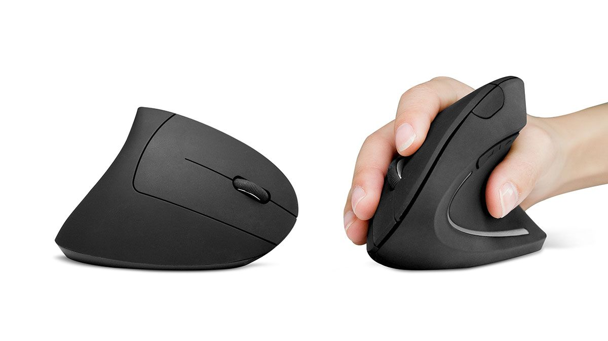
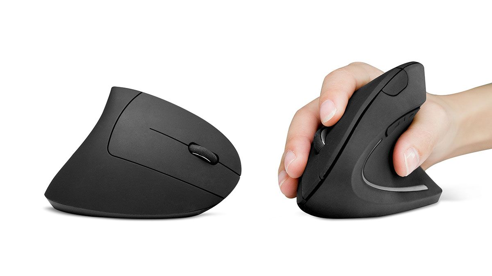
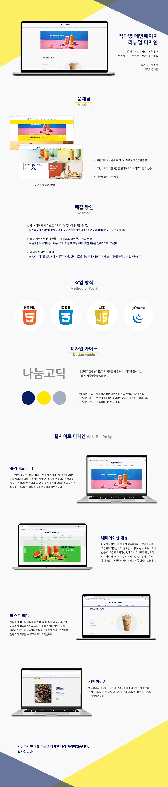
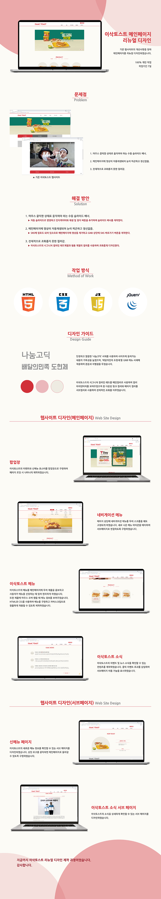

- Name : 김지이
- Birth : 1993. 11. 11
- Address : 서울시 양천구 신월동
- Phone : 010-6339-9309
- Email : ooouuu1@hanmail.net
로딩중
KEEM JI YI
새로운 꿈을 위해 성장하고 있는 웹퍼블리셔 김지이 입니다.
묵묵하지만 확실하게 경청하여 사용자의 니즈를 파악하고
책임감 있는 자세로 시멘틱적인 웹을 구현합니다.
스크롤바를 내리면 작품을 감상할 수 있습니다.
ABOUT ME
VISION
생각만하기 보다는 실천하고, 실천하며 도움이 되는 퍼블리셔가 될 것입니다.
HTML과 CSS를 체계적으로 구조화하여 끊임없이 고민하고 연구하며 성장하고 발전하겠습니다.
코드를 작성하고 브라우저에 구현되는 것은 저에게 큰 성취감을 줍니다.
그 과정에서 큰 재미와 흥미를 이끌어주며 포기보다는 의문점을 가지고 연구할 수 있는 큰 힘을 줍니다.
끝없이 탐구하고 창의적으로 이끄는 사람이 되겠습니다.
WHAT CAN I DO?
심미적 요소를 더하여 사용자의 니즈에 맞는 웹을 구현하고자 노력하고있습니다.
HTML5 & CSS3 시멘틱 페이지를 ZenCoding(EMMET), SCSS로 코딩할 수 있습니다.
관찰하고, 수용하며 사용자에 맞춰 구현하는 능력은 저의 최고의 장점 중 하나입니다.
JS 플러그인을 사용에 그치지 않고 필요한 기능을 직접 구현할 수 있는 Javascript/jQuery 로직구현이 가능합니다.
새로운 코딩기법과 디자인을 배우는 것이 정말 즐겁습니다.
- ZenCoding(EMMET) & SCSS
- Javascript & jQuery 로직구현
- MVC 패턴의 페이지 구성
- RWD 반응형 웹디자인
- HTML5 DTD 유효성 검사 통과
- 웹접근성을 향상시킨 시멘틱 페이지
WORK STYLE
- 구조와 디자인, 기능을 분리한 MVC패턴을 구현
- 자바스크립트와 jQuery / React 를 구현
- HTML5 시멘틱과 CSS3 웹페이지를 구현
다른 사람이 말하는 나
-
유리
이야기를 잘 들어주는 친구어떤 일이 있어도 남의 이야기도 자기 이야기처럼 허투루 들어주지 않는 친구! 공감능력이 뛰어나고
이상하게 이 친구와 함께 얘기하다보면 많은 이야기를 하게 돼 편안해진다. -
빛나
배려심 많은 친구배려심이 많아 세세한 부분까지 잘 챙겨준다. 내 상황을 잘 캐치해서 불편함 없이 상황을 배려해준다. 나도 같이 맘이 착해지는 기분으로 좋은 기운을 많이 받는다!
-
홍비
손재주가 있고 장점을 이끌어 내주는 친구포토샵이나 필요한 부분이 있을때 막힘없이 해결해 주어서 도움받을때가 많다 또 내가 몰랐던 내 장점까지 이끌어내 주어서 힘을 주는 든든한 친구!
SKILL
탁월한 UX분석능력과 Emmet/Zencoding 활용
-
UX/UI 디자인
사용자의 Context와 Needs를 파악하고
Problem을 해결할 수 있는 Insight 도출 -
반응형 웹표준
시멘틱을 지향하는 HTML/CSS 작성능력 보유,
자바스크립트와 제이쿼리 기반의 로직 구현 가능
SASS 전처리기와 리액트 라이브러리 활용
-
Sass Preprocessor
협업 웹코딩의 필수 기술인 SCSS를 이용한
CSS 스타일링을 원활이 사용할 수 있습니다. -
리액트 라이브러리
국내 프론트엔드 시장의 대세 리액트 코드구현,
자바스크립트와 제이쿼리 기반의 로직구현 가능
ABILITY
젠코딩
HTML5
CSS
jQuery
웹기획
디자인
95%
리더쉽
적극성
창조성
사교성
책임감
정직성
온라인 이력서
항상 사용자의 입장을 생각하며 시멘틱적인 화면을 구현시키고자
매일 노력하고 있습니다.
다양한 이야기, 다양한 경험, 다양한 요구사항을 귀담아 들어 수용하는 것은
장점중 하나입니다.
HTML5 & CSS3 시멘틱 페이지를 ZenCoding(EMMET)하여 시멘틱하게 구조화하고
JS 플러그인을 사용에 그치지 않고 필요한 기능을 직접 구현할 수 있는 Javascript/jQuery 로직구현이 가능합니다.
코드에 대하여 끊임없이 연구하는 것은 항상 즐겁고 흥미롭습니다.
UX DESIGN
작품리스트
이전 다음내가 생각하는 사용자경험 - User Experience
UX는 내 경험이자 모두의 경험이며 단순함을 기반으로
나도 쓰면서 불편한 것들 또한 사용자를 관찰하며 불편하다고 판단되는 것들을
풀어내고 그 과정을 발전시켜 쉽게 사용자에게 다가가는 것을 UX라고 생각한다.
도출해낸 결과는 쉽고 간결해야하며 불편함이 없어야 하는 것이다.
사용자가 실행하고자하는 행동을 바탕으로 서비스를 구축해야한다.
불편함을 겪는건 쉽지만 왜, 무엇때문에 불편한지 파악하는 과정을 거치고 해소시키는 결과로 풀어내는 건 어렵다.
하지만 어렵게 다가간다면 UX는 실패한 UX가 될 것이다. 위에서 말했다시피 단순함을 기반으로 나도 단순하게 풀어내는 과정에 다가가야
UX디자인에 긍정이 포함된 완성이라고 생각한다.
지나칠 수 있는 정거장을 알려주는 카카오 승하차알람
디자인과 UX의 차이
- 1. 전기플러그
-
뽑기 힘들었던 전기플러그를
사용자의 경험에 맞게 디자인된 아이디어 상품
- 2. 마우스
-
장시간 사용하는 마우스를
손목의 각도에 맞춰 불편함을 줄여주는 버티컬마우스
 

PORTFOLIO
컨버스코리아 (리뉴얼 디자인)
Converse Korea Renewal Design
컨버스코리아 사이트를 리뉴얼 하였습니다.
기존의 레이아웃을 전체적으로 바꾸어 메인비주얼영역을 동영상으로 보여지게했으며
하나로 나열되어있던 배너영역을 슬라이드로 바꾸어 정리하였습니다
작업프로그램 : Photoshop, Visual Studio Code
작업기여도 : 100% 개인 작업


동서식품 (리뉴얼 디자인)
Dongsuh Renewal Design
동서식품 사이트를 리뉴얼 하였습니다.
기존 동서식품은 웹과 모바일에 각각 대응하는 적응형으로 되었지만
반응형으로 바꿔 모든 기기에 대응할 수 있도록 제작하였습니다
작업프로그램 : Photoshop, Visual Studio Code
작업기여도 : 100% 개인 작업


일룸 (리뉴얼 디자인)
illoom Renewal Design
일룸 사이트를 리뉴얼 하였습니다.
기존 사이트에서 맞지 않았던 슬라이더의 이전,다음 가로폭이 정해져 답답한 이미지
또, 메뉴가 떨어지는 현상을 수정하였습니다.
작업프로그램 : Photoshop, Visual Studio Code
작업기여도 : 100% 개인 작업

네번째 포폴작품
ISAAC TOAST Renewal Design
기존 웹사이트의 개선사항을 찾아 메인페이지를 리뉴얼 디자인하였습니다.
이삭토스트의 컬러 아이덴티티를 사용하여 브랜드 이미지를 강조하였으며,
간결한 레이아웃으로 전달하고자 하는 내용을 보기 쉽게 배치하였습니다.
작업프로그램 : Photoshop, Visual Studio Code
작업기여도 : 100% 개인 작업

필요한 기능을 직접 javascript/jquery 로직 구현
‘스타일을 창조하여 그것을 섬세한 디자인으로 탈바꿈 시키고싶다’ 는 마음으로 매일 노력하고 있습니다.
HTML5 & CSS3 시멘틱 페이지를 SCSS, ZenCoding(EMMET)으로 작성할 수 있습니다.
클라이언트의 요구사항을 적극적으로 반영하는 UI/UX 디자인 능력은 저의 최고의 장점중 하나입니다.
JS 플러그인을 사용에 그치지 않고 필요한 기능을 직접 구현할 수 있는 Javascript/jQuery 로직구현이 가능합니다.
새로운 코딩기법과 디자인을 배우는 것이 정말 즐겁습니다.
for문과 다중 if문의 결합한 로직 구현
SASS, Emmet 활용
페이지 전체의 계층구조를 입체적으로 분석할 수 있는
실무형 코딩기법 Emmet을 사용할 수 있어 업무시간을 단축시킬 수 있을뿐 아니라,
유지보수도 더욱 쉽고 정확하게 처리할 수 있습니다.
SCSS의 가장 큰 장점인 변수와 Mixin 기능을 적극 활용하여
CSS 스타일링을 할 수 있습니다.
Sprite-Image와 IR(Image Replacement)기법에 능숙
id, class를 남발하지 않고 원하는 요소를 셀렉팅할 수 있는 능력,
CSS3 Transform, Transition, Keyframes을 이용한 애니메이션 효과 구현
직접 구현한 슬라이드
-
좌우이동 슬라이드
슬라이드 구현에 적합한 ul,li,a 태그와 flxe를 사용하여 UI를 구현하였습니다.
슬라이드 보기
또한 자바스크립트로 position의 lef값을 동적으로 변화시켜 이동하도록 하였습니다. 플러그인 없이 직접 구현하였습니다. -
fade 슬라이드
이동 슬라이드와 페이드 슬라이드를 구현하였습니다. 이동 슬라이드와 다르게 페이드 슬라이드는 setInterval로 자동슬라이드를 만들었습니다. 플러그인 없이 직접 구현하였습니다.
슬라이드 보기
코딩 프로젝트
Design


CONTACT
귀사에 입사를 지원합니다.
저의 웹퍼블리싱 이야기 입니다.
질문을 선택하시면 정리된 답변을 보실수 있습니다.
- 1. html5의 가장 큰 특징은 무엇일까요? 화살표
-
국제표준 SGML에서 hypertext를 강조하여 만들어진 언어로써 그 해석에 있어 별도의 도구가 필요하지 않은 편리한 언어입니다
- 2. 웹표준, 웹접근성, 시멘틱웹에 대해 설명해 주세요. 화살표
-
웹 사이트에서 제공하는 정보를 차별 및 제한 없이 동등하게 이용할 수 있도록 보장하는 것 입니다.
- 3. 자바스크립트 라이브러리 사용시 가장 큰 장점은? 화살표
-
언어를 컴파일하여 기계 언어로 바꾸지 않고 프로그래밍 언어로 되어있는 코드를 한줄씩 읽으며 실행하기 때문에 프로그램 실행 속도를 높여줍니다.
- 4. .setInterval() 함수에 대해 설명하시오. 화살표
-
어떤 코드를 일정한 시간 간격을 두고 반복해서 실행하고 싶을때 사용하는 함수입니다.
- 5. CSS 미디어쿼리는 어떤 역할을 수행하는지 답하시오~! 화살표
-
각기 다른 사이즈의 해상도에 유연하게 대응하기 위한 역할을 합니다.
더욱 궁금하신 점은 면접시 말씀드리겠습니다. 감사합니다~!
본 페이지는 저의 개인 포트폴리오용으로 제작되었으며, 상업적인 목적과 관련이 없음을 알려드립니다.